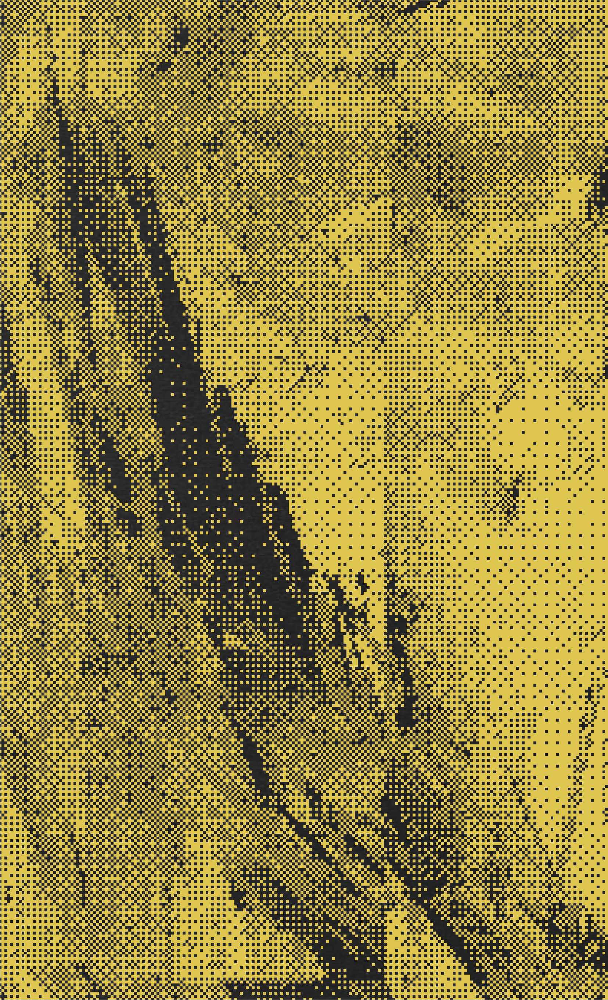
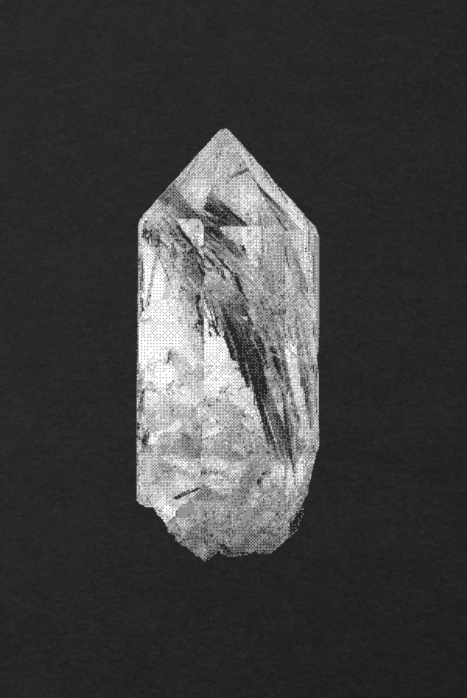
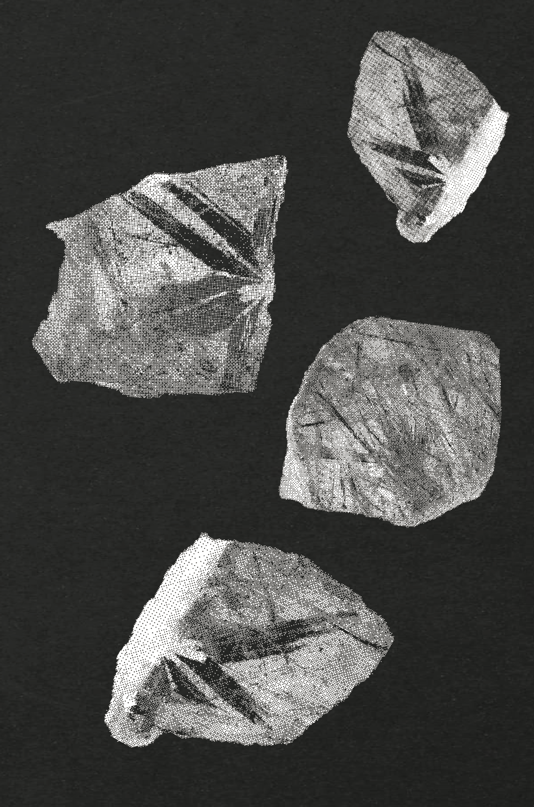
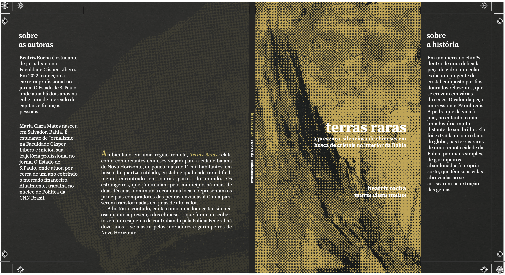
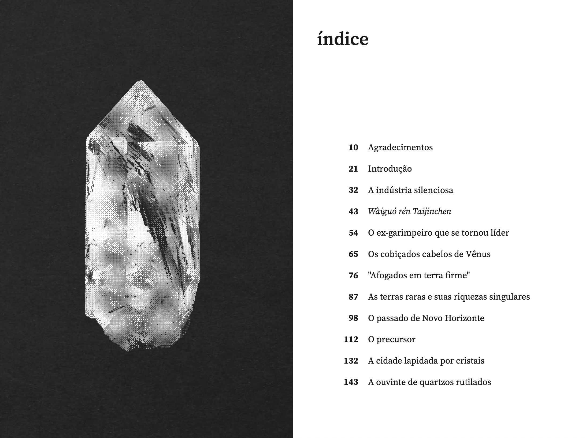
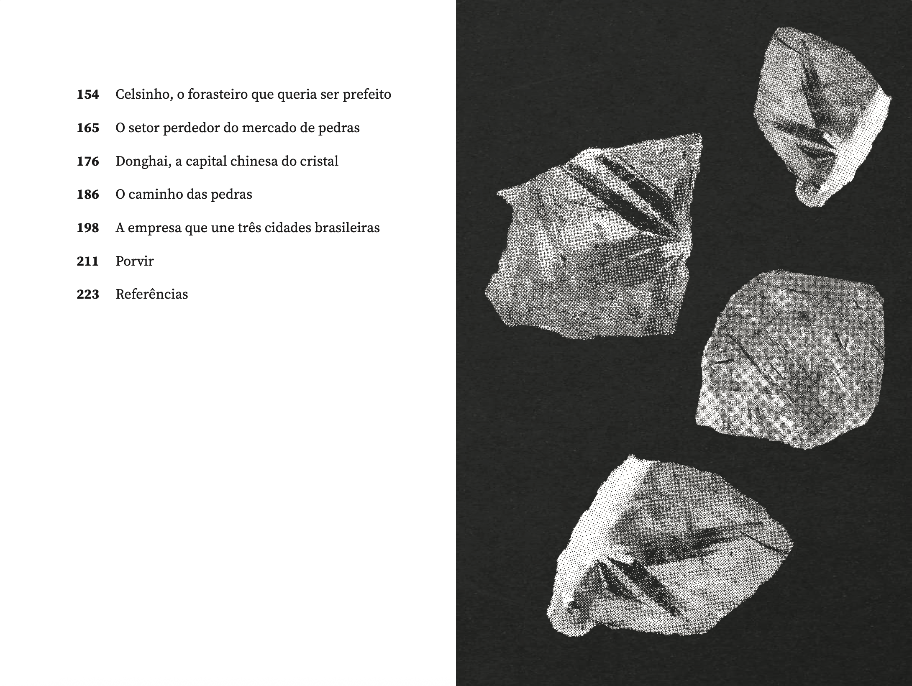

terras raras
2024
em um mercado chinês, dentro de uma delicada peça de vidro, um colar exibe um pingente de cristal composto por fios dourados reluzentes, que se cruzam em várias direções. o valor da peça impressiona: 79 mil reais. a pedra que dá vida à joia, no entanto, conta uma história muito distante de seu brilho. ela foi extraída do outro lado do globo, nas terras raras de uma remota cidade da Bahia, por mãos simples, de garimpeiros abandonados à própria sorte, que têm suas vidas abreviadas ao se arriscarem na extração das gemas.
projeto gráfico desenvolvido para a publicação de Terras Raras: a presença silenciosa de chineses em busca de cristais no interior da Bahia.
publicação desenvolvida como trabalho de conclusão do curso para graduantes de Jornalismo pela Faculdade Cásper Líbero.




